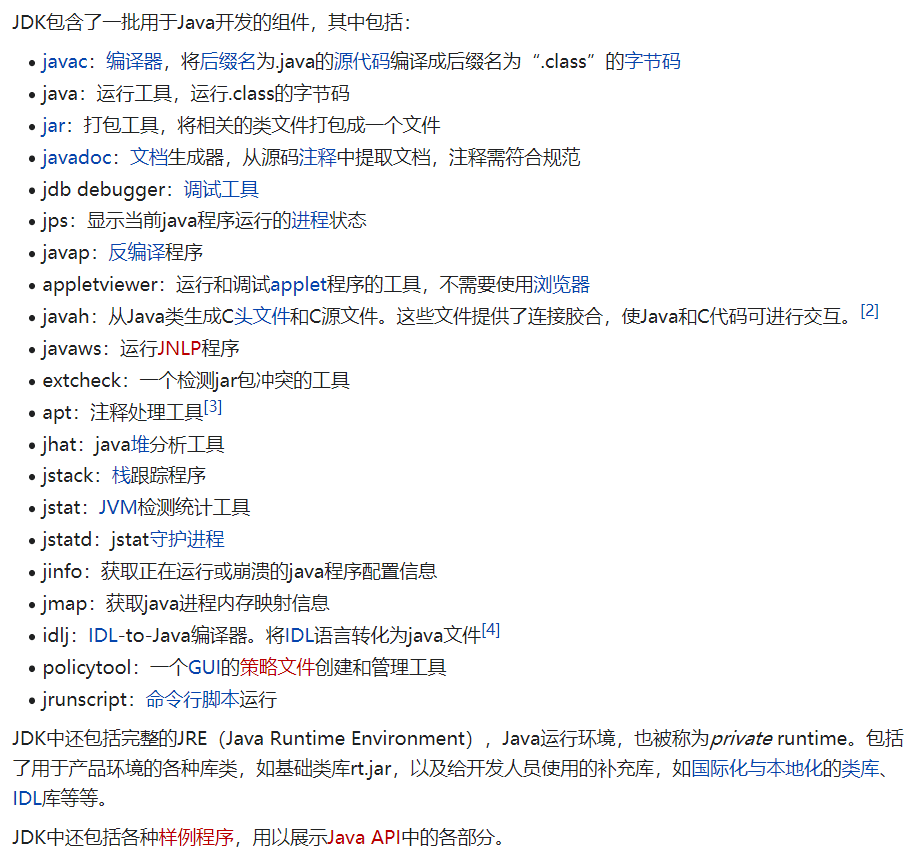
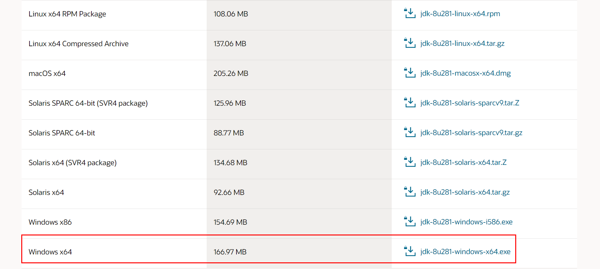
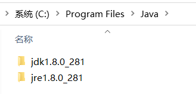
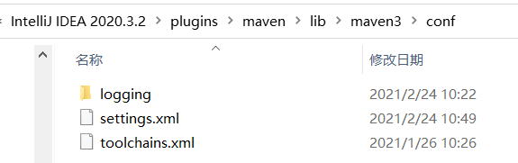
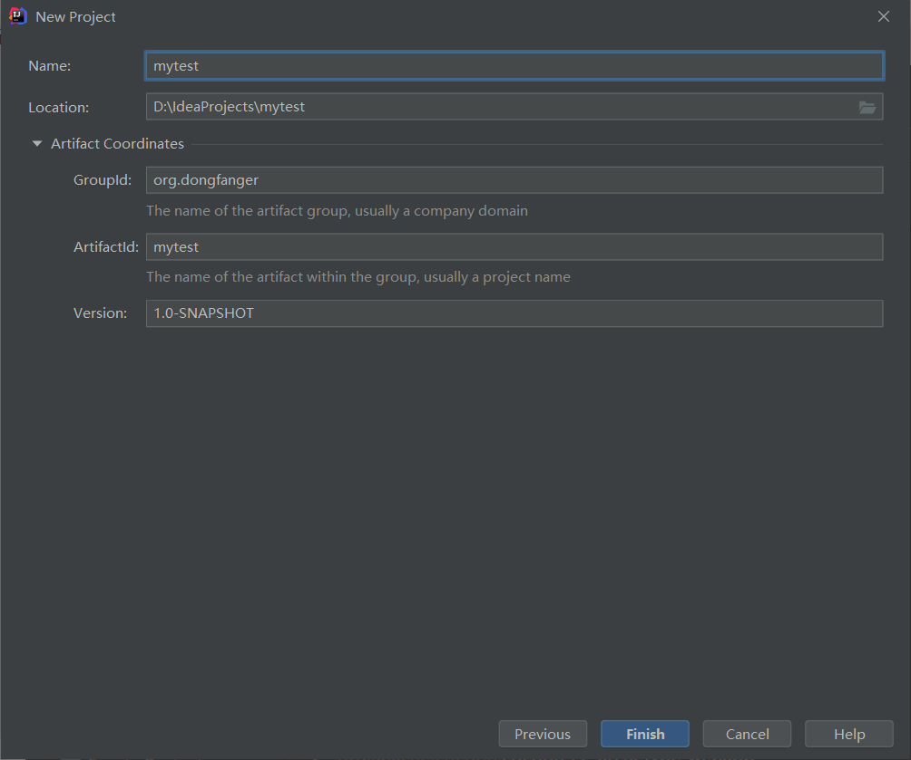
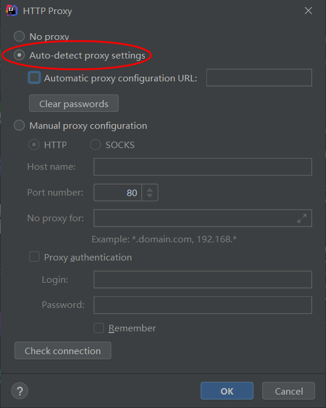
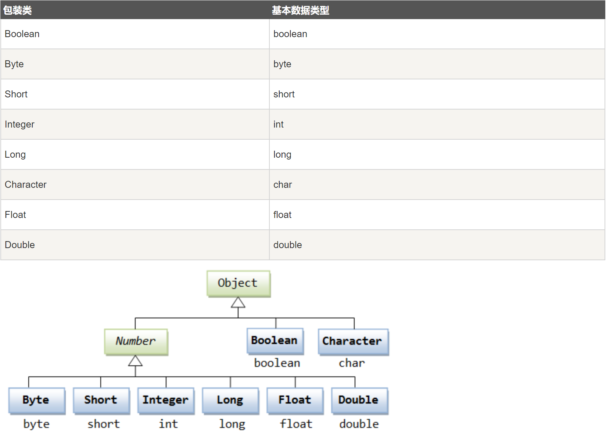
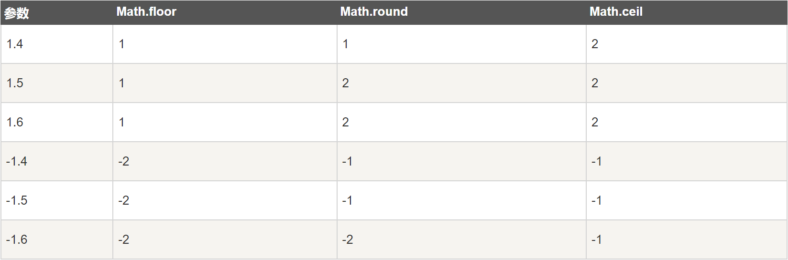

测试人员学Java入门指南¶

目标读者¶
本指南特别适合有Python基础的同学学习Java入门，对于没有任何编程经验的同学可能会存在困难。
为什么测试人员要学Java¶
选择Java，应该不错。TesterHome测试论坛知名大佬基本都是以Java技术栈为主，少部分是Golang和Python。我公司2021年校招的两个同济大学研究生，测试开发，也是以Java为主。有一个测开同事跳槽去了美团，拿了高薪，只会Java。有一个测开同事跳槽去了创业公司做了测试架构师，只会Java。招聘网站搜索测试开发20K以上职位，基本都要求会Java。我接触到的开发，Java程序员占80%以上。
测试人员用Java能干嘛¶
如果你的公司是以Java技术栈为主，那么你可以用Java做所有事情，而且有些事情只能用Java来做。这个问题挺关键的，学习一门语言肯定是要能够学以致用。在自动化测试，Java会显得稍微有点笨重，而Python会适合一点。你可以用Python来写接口自动化脚本，在小范围内使用，但是当团队变大以后，脚本如何规范如何维护，就成了一个很大的问题，而Java由于静态语言特性和面向对象编程，正好可以用来解决这个问题。在测试平台和性能测试，Java有很成熟的Web开发框架和配套的生态。在测试工具开发，公司封装好的Java库可以拿来即用，碰到问题也可以找开发帮忙。白盒测试，基本上都是要靠Java来做的，看代码，用JaCoCo统计代码覆盖率。其他专项比如流量录制回放、全链路压测、Dubbo接口测试，都只能使用Java来做。
测试人员怎么学Java¶
我推荐刷完一遍基础语法后，在LeetCode上面刷算法题来加强练习。Java还是有一定的学习门槛的，初学者可能学起来会有些吃力，可以先从Python入手，了解编程语言的底层逻辑，等对编程有些许感知以后，再学习Java。基础语法可以快速浏览一遍，一遍并不会就能记住了，需要在编码中持续加强记忆。光学语法也不行，学习Java和其他编程语言一样，需要多敲多练，刷算法题，既能熟悉Java语法，也能熟悉算法，一举两得，题做不来就先把答案背一遍再做。另外，可以在工作中主动找研发开通下代码权限，尝试Review开发代码，看多了，有些技巧也会知道了。有机会，可以用Java写点工具或者平台，实践出真知。
搭建环境¶
安装Java
Java的安装包是个.exe文件，特殊地方在于文件名不是java-xxx.exe而是jdk-xxx.exe，比如jdk-8u281-windows-x64.exe，jdk是Java Development Kit的缩写，指Java开发工具包，包括以下内容：

JDK的最新版本为15，但是国内大多数公司仍然使用的是JDK8，这是因为JDK8是各方面都很成熟稳定的版本，并且基于JDK8开发的业务系统已经具有一定规模，新版本JDK并不能完全无感知的迁移，需要做代码修改和测试，会是一笔巨大开销，为了降低成本和规避兼容问题风险，JDK8沿用到了至今。JDK8的下载地址如下：
https://www.oracle.com/java/technologies/javase/javase-jdk8-downloads.html
选择相应的版本下载：

比如我的电脑是Windows
64位的系统，就选择了Windows x64这个版本，会下载到一个jdk-8u281-windows-x64.exe文件。Java已经被Oracle收购了，需要登录Oracle账号后才能下载，没有账号注册一个也很方便：
下载后可以开始安装了：

安装到默认位置即可，直接下一步。中途会让选择JRE（Java Runtime Environment，Java运行环境）的目标文件夹：

依然保持默认即可。安装结束后就能看到两个新文件夹了：

以前，还需要配置系统环境变量，设置JAVA_HOME和CLASSPATH才能使用Java（具体方法百度有很多）。现在，安装完成即可用，省去了不少麻烦，速度加快。打开cmd输入java -version，命令能执行成功就表示Java已经安装好了：

安装IntelliJ IDEA
JetBrains全家桶中也有专门用来写Java的，叫做IntelliJ IDEA，一般只说后面一个单词“哎迪儿”就知道是这个东西了。下载地址为：
https://www.jetbrains.com/idea/download/#section=windows
个人建议选择旗舰版，看着齐全。下载后双击ideaIU-2020.3.2.exe安装，先别忙着打开。
Maven仓库
Maven是用来管理Java第三方包的主流仓库工具，通过pom.xml文件来配置安装即可，在mvnrepository网站上能检索到所需配置信息：
官方仓库有时候下载速度很慢，本文用国内镜像替代，提高首次打开时同步仓库速度。我们先把Maven中央仓库从Apache替换成阿里云。打开本地目录D:\Program Files\JetBrains\IntelliJ IDEA 2020.3.2\plugins\maven\lib\maven3\conf：

编辑settings.xml文件，找到<mirrors>标签，添加代码：
<mirror>
<id>aliyunmaven</id>
<mirrorOf>*</mirrorOf>
<name>阿里云公共仓库</name>
<url>https://maven.aliyun.com/repository/public</url>
</mirror>

这是新版写法，官网https://maven.aliyun.com/mvn/guide有说明。
接着可以打开IDEA了，欢迎界面映入眼帘：

新建项目
选择新建Maven项目：

填写项目名和存放位置：

在pom.xml文件中添加仓库配置：
<repositories>
<repository>
<id>public</id>
<url>https://maven.aliyun.com/repository/public</url>
</repository>
</repositories>
<pluginRepositories>
<pluginRepository>
<id>public</id>
<url>https://maven.aliyun.com/repository/public</url>
</pluginRepository>
</pluginRepositories>

记得点击右上角的Load Maven Changes按钮，此时前面切换仓库的作用就体现出来了，右下角同步速度比默认明显增快。至此，以阿里云为Maven中央仓库的项目就创建好了。
其他设置
UTF-8

网络自动代理


基础语法¶
Java虽然学习门槛有点高，但是如果熟悉Python以后，再看Java基础语法，其实是非常简单的。
4个概念
对象：Java是纯面向对象编程语言，对象的概念有点抽象，具体来说可以是一条狗，也可以是某个人。
类：类是对象的模板，有点像克隆的母体。
属性：属性就是状态，相当于变量。
方法：方法就是行为，跟函数类似，完成某个特定功能。
Hello World
Java的Hello World经常拿来和其他语言比较，嫌它啰嗦，然而啰嗦的背后是严谨：
public class HelloWorld {
public static void main(String[] args) {
System.out.println("Hello World");
}
}

Java把每个语法都显式的表达了出来，阅读代码就能知道是什么意思，不会产生额外的意想不到的结果。
基本语法
public static void main(String[] args)，是所有Java程序的执行入口。源文件后缀是
.java，源文件名称必须和类名一致。源文件编译后的文件后缀是
.class。Java是大小写敏感的，类名首字母应该大写，方法名首字母小写，也就是驼峰命名法。
标识符
类名、属性名和方法名都被称为标识符，Java标识符规则如下：
标识符是大小写敏感的
所有的标识符都应该以字母（
A-Z或者a-z）、美元符（$）、或者下划线（_）开始首字符之后可以是字母（
A-Z或者a-z）,美元符（$）、下划线（_）或数字的任何字符组合关键字不能用作标识符
比如合法的标识符：
age、$salary、_value、__1_value
非法的标识符：
123abc、-salary
修饰符
访问控制修饰符 : default, public, protected, private
非访问控制修饰符 : final, abstract, static, synchronized
Java的修饰符极大的提高了代码可阅读性。
变量
因为Java的代码都必须写到类里面，所以就只有以下三种变量：
类变量（静态变量），相当于全局变量
成员变量（非静态变量）
局部变量
注释
public class HelloWorld {
/* 这是第一个Java程序
* 它将输出 Hello World
* 这是一个多行注释的示例
*/
public static void main(String[] args){
// 这是单行注释的示例
/* 这个也是单行注释的示例 */
System.out.println("Hello World");
}
}
八种基本类型
boolean 布尔型 1个字节 8bit（8位）
byte 字节类型 1个字节
char 字符类型 2个字节
short 短整型 2个字节
int 整型 4个字节
long 长整型 8个字节
double 双精度类型 8个字节
float 浮点型（单精度）4个字节
默认的整数类型是int，如果要定义为long
，则要在数值后加上L或者l。
默认的浮点型是double，如果要定义float，则要在数值后面加上F或者f。
对象和类¶
我们都知道Java是纯面向对象编程语言，这个对象是什么，类是什么，它们的关系是怎样呢？
类和对象的关系
先看一张图：

类是girl和boy，对象是每个具体的女孩（Lucy、Rose）和男孩（David、Jack）。
这完美解释了类和对象的关系，即：类是对象的模板。
状态和行为
对象有两个特征，一个是状态（又叫做属性），一个是行为（又叫做方法），我们拿狗来举例，狗的状态有品种、大小、颜色、年龄；行为有吃、跑、睡觉。如图所示：

图的左边是3个狗对象，右边是1个狗类。类定义了对象应该有哪些属性和方法，对象根据类定义好的模板，创建了个性化的实例。
代码实现如下：
public class Dog {
// 属性
String breed;
int size;
String colour;
int age;
// 方法
void eat() {
}
void run() {
}
void sleep(){
}
}
构造方法
在通过类创建对象时，构造方法提供了如何创建对象的细节。Java会给类一个默认的构造方法，你也可以自定义一个或多个构造方法，构造方法命名必须和类名相同，比如：
public class Dog{
public Dog(String breed){
}
}
代码中定义了2个构造方法，根据参数不同，在构造时会调用相应的构造方法。
创建对象
如果没有对象，那么就new一个。Java是通过new关键字来创建对象的。比如使用默认构造方法创建对象：
Dog myDog = new Dog();
或者使用自定义构造方法创建对象：
Dog myDog = new Dog("Bulldog");
访问对象属性和方法
Java和大多数语言一样，采用.运算符访问对象属性和方法，比如：
public class Dog {
int age;
public void setAge(int age) {
this.age = age;
}
public int getAge() {
return this.age;
}
public static void main(String[] args) {
// 创建对象
Dog myDog = new Dog();
// 通过方法来设定age
myDog.setAge(2);
// 调用另一个方法获取age
System.out.println(myDog.getAge());
// 也可以像下面这样访问成员变量
System.out.println(myDog.age);
}
}
类存放规则
Java源文件是用类来组织的，存放在源文件中的类遵循下面几项规则：
一个源文件只能有一个public类，可以有多个非public类。
源文件名必须与public类名一致。
package语句在首行，其次是import语句，最后是类。
八大基本数据类型¶
Java内置了8个基本数据类型，它们分别是byte、short、int、long、float、double、boolean、char。
每种基本数据类型都有相应的包装类：Byte、Short、Integer、Long、Float、Double、Character。包装类提供了面向对象的实现，比如二进制位数（
Integer.SIZE）、最小值（Integer.MIN_VALUE）、最大值（Integer.MAX_VALUE）等。
byte
8位整数，默认值是0，byte类型主要用在大型数组中节约空间，因为它占用的空间只有int类型的四分之一。
short
16位整数，默认值是0。跟byte类型用法类似，占用空间是int类型的二分之一。
int
32位整数，默认值是0。最常用的整数类型。
long
64位整数，默认值是0L。超出int范围的整数需要使用long类型。
float
32位浮点数，默认值是 0.0f。float类型用来表示小数。
double
64位浮点数，默认值是0.0d。浮点数的默认类似是double类型。
boolean
1位真假值（true/false），默认值是false。
char
16位Unicode字符，默认值是u0000。用来存储任何单一字符。
第九种基本数据类型void
实际上，Java还有第九种基本数据类型void，我们经常在方法返回值那里见到它，它的包装类是java.lang.Void。
三大变量类型¶
Java中的一个类可以包含3种类型的变量：局部变量、成员变量、类变量。它们的定义位置如下图所示：

局部变量
局部变量是在方法、构造方法或者语句块中定义的变量。变量声明和初始化都是在方法中，方法结束后，变量就会自动销毁。
成员变量
成员变量是在类中，方法体之外定义的变量。变量在创建对象的时候实例化，可以被类中方法、构造方法和特定的语句块访问。
类变量
类变量跟成员变量定义的位置相同，只不过必须声明为static类型。
成员变量和类变量在使用上有个明显的区别是：类变量可以直接通过类名.变量形式进行访问，成员变量则不能。比如：
public class B {
static int classVar = 1; // 类变量
int memberVar = 2; // 成员变量
}

成员变量在写代码时IDEA就已经报错了。
修饰符¶
Java修饰符是让Java变得啰嗦的罪魁祸首之一。其他很多语言并没有这么多修饰符，取而代之的是语法规则，比如Python下划线开头的变量是私有变量，Golang小写字母开头的变量是私有变量。但是，正因为Java有着明确的修饰符，所以Java代码看起来是最直白的表述。
修饰符概览
Java修饰符有两大类，它们分别如下：
访问控制修饰符
default（什么都不写）
private
public
protected
非访问控制修饰符
static
final
abstract
synchronized
transient
volatile
修饰符通常是放在一行代码最前面的，起到修饰作用，比如：
public class ClassName {
// ...
}
private boolean myFlag;
static final double weeks = 9.5;
protected static final int BOXWIDTH = 42;
public static void main(String[] arguments) {
// 方法体
}
访问控制修饰符
访问控制，指的是对Java类、接口、变量、方法的访问权限的控制。我们知道Java每个文件是一个类（Class），每个文件夹是一个包（Package），它们彼此之间能不能相互访问，就是通过修饰符决定的。
访问控制修饰符一览表，从上往下，访问权限越来越小：
default
什么都不写，不使用任何修饰符，默认为包访问权限，即同一个包内都是可以访问的。
Java有个很棒的设计：同一个包里面的类不需要import就能直接使用。
示例：
String version = "1.5.1";
boolean processOrder() {
return true;
}
private
意思就像它的名字一样，私有的，只有当前类的内部才可以访问。private用来保护类的隐私，如果外部类想访问private的变量，那么只能通过public的getter方法暴露出去。需要注意的是，private可以用到变量、方法上，但是不能用到类和接口上（这么做没有意义，类总是要被外部调用的，接口总是要被外部实现的）。
示例：
public class Logger {
private String format;
public String getFormat() {
return this.format;
}
public void setFormat(String format) {
this.format = format;
}
}
public
公开的，所有都能访问，没有任何限制。
示例：
public static void main(String[] arguments) {
// ...
}
protected
当前类可以访问，子类有可能可以访问。子类有两种情况：
子类与父类在同一个包中：子类可以访问父类的protected。
子类与父类在不同的包中：子类可以访问，非子类内部的子类实例不能访问。
示例：
package test1;
public class Base {
int defaultInt;
protected int protectedInt;
}
// 不同的包
package test2;
// 子类
public class Test extends Base {
public void test(){
Test t = new Test();
//t.defaultInt = 2; 不可见
t.protectedInt = 3;
}
}
// 非子类
class TestNotSub{
public void test(){
Test t = new Test();
//t.defaultInt = 2; 不可见
//t.protectedInt = 3; 不可见
}
}
需要注意的是，protected可以用到变量、方法上，但是不能用到类（内部类除外）和接口上。
非访问控制修饰符
static
static用来修饰变量和方法。修饰的变量叫做静态变量/类变量，修饰的方法叫做静态方法或/类方法。
静态的含义是，无论实例化多少个对象，静态变量或静态方法只有一份。作为类变量或类方法，static的用法是可以直接通过ClassName.varName访问类变量，或直接通过ClassName.methodName()访问类方法，无需实例化对象。
需要注意的是，静态方法里面不能使用类的非静态变量。
我以Python举例可以更好说明这一点，Python的类方法第一个入参是cls，如果想访问非类变量，那么入参必须是self。
final
final修饰变量：通常和static一起用来声明常量，比如
static final String TITLE = "Manager";final修饰方法：父类的final方法可以被子类继承，但是不能被重写，防止该方法的内容被篡改。
final修饰类：final类不能被继承。
abstract
abstract修饰类：抽象类。
abstract修饰方法：抽象方法。
抽象意味着它们只定义了一个形式，没有具体内容，一定会由其他的类或方法进行具体实现。如果类中有抽象方法，那么这个类必须要定义为抽象类，否则会编译报错。
synchronized
用于修饰方法，这个方法同一时间只能被一个线程访问。
transient
修饰变量，用的很少，我也看不懂。
volatile
修饰变量，变量每次被线程访问时，都强制从共享内存中重新读取值，当变量发生变化时，会强制线程将变化值写入共享内存。这样两个线程在任何时候都能看到变量的同一个值。
运算符¶
Java一共有以下几类运算符：
算术运算符
关系运算符
位运算符
逻辑运算符
赋值运算符
其他运算符
总的来说，Java运算符跟其他编程语言的运算符大同小异，可以快速浏览一下。
算术运算符
假设整数变量A的值为10，整数变量B的值为20：
特别的是，前缀自增自减法（++a
--a）和后缀自增自减法（a++ a--）：
前缀自增自减法（++a
--a）：先进行自增自减，再进行表达式运算。
后缀自增自减法（a++
a--）：先进行表达式运算，再进行自增自减。
示例：
public class Test {
public static void main(String[] args) {
int d = 25;
// 查看 d++ 与 ++d 的不同
System.out.println("d++ = " + (d++) );
System.out.println("++d = " + (++d) );
}
}
结果为：
d++ = 25
++d = 27
关系运算符
假设整数变量A的值为10，整数变量B的值为20：

位运算符
假设整数变量A的值为60，整数变量B的值为13：

逻辑运算符
假设布尔变量A为真，布尔变量B为假：

需要注意的是，如果第一个操作数已经能判断结果了，那么就不会执行下一个操作数，比如：
public class Test {
public static void main(String[] args) {
boolean a = false;
boolean b = true;
boolean c = a && b; // a已经能判断结果为false，不再执行b
boolean d = b || a; // b已经能判断结果为true，不再执行a
}
}
赋值运算符
其他运算符
条件运算符
variable x = (expression) ? value if true : value if false
示例：
public class Test {
public static void main(String[] args){
int a , b;
a = 10;
// 如果 a 等于 1 成立，则设置 b 为 20，否则为 30
b = (a == 1) ? 20 : 30;
System.out.println( "Value of b is : " + b ); // 30
// 如果 a 等于 10 成立，则设置 b 为 20，否则为 30
b = (a == 10) ? 20 : 30;
System.out.println( "Value of b is : " + b ); // 20
}
}
条件运算符也叫做三元运算符，三元场景可以多用这个运算符简写代码。
instanceof 运算符
( Object reference variable ) instanceof (class/interface type)
用来判断对象是否为类的实例。比如：
String name = "James";
boolean result = name instanceof String; // 由于 name 是 String 类型，所以返回真
Java运算符优先级

在编写代码的时候，多用小括号把优先计算的表达式框起来，才不容易出错。
循环结构¶
循环结构
while
while( 布尔表达式 ) {
// 循环体
}
只要布尔表达式为True，就会一直反复执行循环体。
示例：
public class Test {
public static void main(String args[]) {
int x = 10;
while( x < 20 ) {
System.out.print("value of x : " + x );
x++;
System.out.print("\n");
}
}
}
do while
do {
// 循环体
}while( 布尔表达式 );
无论表达式是否为True，都先执行一次循环体，然后就跟while一样先判断布尔表达式，如果为True再继续执行循环，为False就退出循环。
示例：
public class Test {
public static void main(String args[]){
int x = 10;
do{
System.out.print("value of x : " + x );
x++;
System.out.print("\n");
}while( x < 20 );
}
}
for
for(初始化; 布尔表达式; 更新) {
// 循环体
}
初始化：定义一个或多个循环控制变量，也可以为空语句。
布尔表达式：根据True或False决定是否继续执行循环。
更新：更新循环控制变量。
示例：
public class Test {
public static void main(String args[]) {
for(int x = 10; x < 20; x = x+1) {
System.out.print("value of x : " + x );
System.out.print("\n");
}
}
}
Java也有更方便从数组遍历元素的for循环：
for(声明语句 : 表达式)
{
// 循环体
}
声明语句：跟数组元素类型匹配的局部变量。
表达式：数组或返回数组的方法。
示例：
public class Test {
public static void main(String args[]){
int [] numbers = {10, 20, 30, 40, 50};
for(int x : numbers ){
System.out.print( x );
System.out.print(",");
}
System.out.print("\n");
String [] names ={"James", "Larry", "Tom", "Lacy"};
for( String name : names ) {
System.out.print( name );
System.out.print(",");
}
}
}
break
跳出整个循环。
示例：
public class Test {
public static void main(String args[]) {
int [] numbers = {10, 20, 30, 40, 50};
for(int x : numbers ) {
if( x == 30 ) {
break; // x等于30时跳出循环，后面都不打印了
}
System.out.print( x );
System.out.print("\n");
}
}
}
continue
跳过当前这次循环，执行下一次循环。
示例：
public class Test {
public static void main(String args[]) {
int [] numbers = {10, 20, 30, 40, 50};
for(int x : numbers ) {
if( x == 30 ) {
continue; // 不会打印30，但是会继续打印后面元素
}
System.out.print( x );
System.out.print("\n");
}
}
}
break和continue可以从字面意思来区分，break中断循环，continue继续下次循环。
条件语句¶
if
if(布尔表达式)
{
//如果布尔表达式为true将执行的语句
}
示例：
public class Test {
public static void main(String args[]){
int x = 10;
if( x < 20 ){
System.out.print("这是 if 语句");
}
}
}
if else
if(布尔表达式){
//如果布尔表达式的值为true
}else{
//如果布尔表达式的值为false
}
示例：
public class Test {
public static void main(String args[]){
int x = 30;
if( x < 20 ){
System.out.print("这是 if 语句");
}else{
System.out.print("这是 else 语句");
}
}
}
也可以跟多个if else：
if(布尔表达式 1){
//如果布尔表达式 1的值为true执行代码
}else if(布尔表达式 2){
//如果布尔表达式 2的值为true执行代码
}else if(布尔表达式 3){
//如果布尔表达式 3的值为true执行代码
}else {
//如果以上布尔表达式都不为true执行代码
}
示例：
public class Test {
public static void main(String args[]){
int x = 30;
if( x == 10 ){
System.out.print("Value of X is 10");
}else if( x == 20 ){
System.out.print("Value of X is 20");
}else if( x == 30 ){
System.out.print("Value of X is 30");
}else{
System.out.print("这是 else 语句");
}
}
}
嵌套的if else
if(布尔表达式 1){
////如果布尔表达式 1的值为true执行代码
if(布尔表达式 2){
////如果布尔表达式 2的值为true执行代码
}
}
示例：
public class Test {
public static void main(String args[]){
int x = 30;
int y = 10;
if( x == 30 ){
if( y == 10 ){
System.out.print("X = 30 and Y = 10");
}
}
}
}
switch case
switch(expression){
case value :
//语句
break; //可选
case value :
//语句
break; //可选
//你可以有任意数量的case语句
default : //可选
//语句
}
expression：变量或返回变量的方法，变量类型可以是byte、short、int或char，以及String类型。
value：字符串常量或字面量，且与表达式的变量类型相同。
break：可选，有break时会中断后续匹配跳出switch语句，没有break时会继续执行后面的case。
default：当所有case都没有匹配到时，会执行default语句，一般放在最后的位置。
示例：
public class Test {
public static void main(String args[]){
//char grade = args[0].charAt(0);
char grade = 'C';
switch(grade)
{
case 'A' :
System.out.println("优秀");
break;
case 'B' :
case 'C' :
System.out.println("良好");
break;
case 'D' :
System.out.println("及格");
break;
case 'F' :
System.out.println("你需要再努力努力");
break;
default :
System.out.println("未知等级");
}
System.out.println("你的等级是 " + grade);
}
}
Number类¶
Java是纯面向对象编程语言，为了以对象的方式使用内置数据类型，比如byte、int、long、double等，Java对它们进行了封装，封装后的类称为包装类。这里的封装一般也叫做装箱，反之叫做拆箱。

所有的数字包装类，都是抽象基类Number的子类，包括Byte、Short、Integer、Long、Float、Double。
示例：
public class Test{
public static void main(String[] args){
Integer x = 5; // 装箱
x = x + 10; // 拆箱
System.out.println(x);
}
}
Math类¶
为了支持数学运算，Java提供了Math类，可以进行指数、对数、平方根等数学运算。
示例：
public class Test {
public static void main (String []args)
{
System.out.println("90 度的正弦值：" + Math.sin(Math.PI/2));
System.out.println("0度的余弦值：" + Math.cos(0));
System.out.println("60度的正切值：" + Math.tan(Math.PI/3));
System.out.println("1的反正切值： " + Math.atan(1));
System.out.println("π/2的角度值：" + Math.toDegrees(Math.PI/2));
System.out.println(Math.PI);
}
}
对于四舍五入，Math提供了round、floor、ceil三个方法：
round：四舍五入
floor：向下取整
ceil：向上取整（返回double类型）
示例：

基本类型与包装类区别
基本类型不是对象，不需要new关键字创建，包装类需要使用new关键字创建对象。
存储方式不同，基本类型的值存在堆栈中，包装类的实例存在堆中。
初始值不同，包装类的初始值为null，基本类型视具体类型而定，比如int初始值为0，boolean初始值为false。
有些场景下只能使用包装类，比如与集合类交互，使用泛型和反射调用函数，某个字段允许null值，就只能使用包装类。
Character类¶
Character用于对单个字符进行操作。
我们知道Java内置了数据类型char，但面向对象的Java在实际处理过程中需要的是对象，于是包装类Character就被设计了出来。
创建对象代码如下：
Character ch = new Character('a');
也可以利用装箱简写代码：
Character ch = 'a';
Character类具有以下方法：

String类¶
字符串在任何编程语言都是应用非常多的，Java提供了String类来对字符串进行操作。
创建字符串有两种方式：
简单方式
String str = "Runoob";
new关键字
String str2=new String("Runoob");
它们的区别在于，前者创建的字符串存放在公共池中，后者存放在堆上：
// 简单方式 公共池
String s1 = "Runoob";
String s2 = "Runoob";
String s3 = s1;
// new关键字 堆
String s4 = new String("Runoob");
String s5 = new String("Runoob");
如下图所示：
String有3个常用方法：
获取长度
String site = "www.runoob.com";
int len = site.length();
连接字符串
// 调用方法
"我的名字是 ".concat("Runoob");
// “+”操作符
"Hello," + " runoob" + "!"
创建格式化字符串
String fs;
fs = String.format("浮点型变量的值为 " +
"%f, 整型变量的值为 " +
" %d, 字符串变量的值为 " +
" %s", floatVar, intVar, stringVar);
StringBuilder类¶
String创建的字符串对象是不能修改的，如果想修改，那么需要用到StringBuffer和StringBuilder类。
StringBuilder相对于StringBuffer来说有速度优秀，所以大多数时候使用StringBuilder即可。如果想要保证线程安全，那么只能使用StringBuffer。
StringBuilder示例：
public class RunoobTest{
public static void main(String args[]){
StringBuilder sb = new StringBuilder(10);
sb.append("Runoob..");
System.out.println(sb);
sb.append("!");
System.out.println(sb);
sb.insert(8, "Java");
System.out.println(sb);
sb.delete(5,8);
System.out.println(sb);
}
StringBuffer类¶
示例：
public class Test{
public static void main(String args[]){
StringBuffer sBuffer = new StringBuffer("菜鸟教程官网：");
sBuffer.append("www");
sBuffer.append(".runoob");
sBuffer.append(".com");
System.out.println(sBuffer);
}
}
数组¶
Java中的数组是用来存储固定大小的同类型元素。
声明方式：
dataType[] arrayRefVar;
创建数组：
arrayRefVar = new dataType[arraySize];
声明和创建可以一行代码搞定：
dataType[] arrayRefVar = new dataType[arraySize];
在创建时同时初始化值：
dataType[] arrayRefVar = {value0, value1, ..., valuek};
或者创建匿名数组：
System.out.println(Arrays.toString(new int[]{3, 1, 2, 6, 4, 2}));
数组是通过索引来访问元素的，索引值从0到arrayRefVar.length-1。
可以使用for循环来遍历数组，比如：
public class TestArray {
public static void main(String[] args) {
double[] myArray = {1.9, 2.9, 3.4, 3.5};
// 打印所有数组元素
for (int i = 0; i < myArray.length; i++) {
System.out.println(myArray[i] + " ");
}
// 计算所有元素的总和
double total = 0;
for (int i = 0; i < myArray.length; i++) {
total += myArray[i];
}
System.out.println("Total is " + total);
// 查找最大元素
double max = myArray[0];
for (int i = 1; i < myArray.length; i++) {
if (myArray[i] > max) max = myArray[i];
}
System.out.println("Max is " + max);
}
}
也能使用for each在不使用下标的情况下遍历数组：
for(type element: array)
{
System.out.println(element);
}
比如：
public class TestArray {
public static void main(String[] args) {
double[] myArray = {1.9, 2.9, 3.4, 3.5};
// 打印所有数组元素
for (double element: myArray) {
System.out.println(element);
}
}
}
前面介绍的都是一维数组，除了一维数组，还有多维数组，比如：
String[][] str = new String[3][4];
int[][] a = new int[2][3];
java.util.Arrays类提供了很多方法来操作数组，这些方法都是静态的。比如：
toString：转换为字符串。
fill：给数组赋值。
sort：对数组排序。
equals：比较数组。
binarySearch：对排序好的数组进行二分查找。
方法¶
Java中没有函数的概念，只有方法这一说法。但实际上他们的作用是一模一样的，都是把一段代码进行封装后调用。
方法的命名规则
Java中的方法采用驼峰命名法，第一个单词首字母小写，后面每个单词首字母均大写，比如addPerson。
方法定义
main方法
public static void main(String[] args) {
int i = 5;
int j = 2;
int k = max(i, j);
System.out.println( i + " 和 " + j + " 比较，最大值是：" + k);
}
main方法的头部是不变的，带修饰符public和static，返回void类型值，方法名字是main，此外带一个String[]类型参数args。
void
void是Java基本数据类型之一，表明方法没有返回值。
值传递
Java方法的参数传递都是值传递。如果参数是基本类型，传递的值是基本类型字面量的拷贝。如果参数是对象，传递的值是对象引用的拷贝。
构造方法
构造方法和类名一模一样，是一种特殊的方法，没有返回值，在对象初始化时调用。一个类可以有多个构造方法，Java会根据参数进行匹配。比如：
// 一个简单的构造函数
class MyClass {
int x;
// 构造函数
MyClass() {
x = 10;
}
// 构造函数
MyClass(int i) {
x = i;
}
}
构造方法可以不用显式定义，Java会默认定义一个，一旦你定义了自己的构造方法，默认构造方法就会失效。默认构造方法的访问修饰符和类的访问修饰符相同，类为public构造方法也是public，类为protected构造方法也是protected。
finalize()
finalize()方式是构造函数的逆向，在对象销毁时调用，比如：
public class FinalizationDemo {
public static void main(String[] args) {
Cake c1 = new Cake(1);
Cake c2 = new Cake(2);
Cake c3 = new Cake(3);
c2 = c3 = null;
System.gc(); //调用Java垃圾收集器
}
}
class Cake extends Object {
private int id;
public Cake(int id) {
this.id = id;
System.out.println("Cake Object " + id + "is created");
}
protected void finalize() throws java.lang.Throwable {
super.finalize();
System.out.println("Cake Object " + id + "is disposed");
}
}
可变参数
typeName... parameterName
一个方法中只能有一个可变参数，并且必须放在最后。比如：
public class VarargsDemo {
public static void main(String args[]) {
// 调用可变参数的方法
printMax(34, 3, 3, 2, 56.5);
printMax(new double[]{1, 2, 3});
}
// 可变参数
public static void printMax( double... numbers) {
if (numbers.length == 0) {
System.out.println("No argument passed");
return;
}
double result = numbers[0];
for (int i = 1; i < numbers.length; i++){
if (numbers[i] > result) {
result = numbers[i];
}
}
System.out.println("The max value is " + result);
}
}
异常处理¶
Java的异常检测格外的严格，如果没有合适的处理异常，有可能代码都无法编译。Java异常类如下图所示：

Throwable类有两个类Error和Exception，图中也列举了几个常见的子类，比如OutOfMemoryError内存溢出、NullPointerException空指针异常等。
捕获异常
try
{
// 程序代码
}catch(ExceptionName e1)
{
//Catch 块
}
示例：
// 文件名 : ExcepTest.java
import java.io.*;
public class ExcepTest{
public static void main(String args[]){
try{
int a[] = new int[2];
System.out.println("Access element three :" + a[3]);
}catch(ArrayIndexOutOfBoundsException e){
System.out.println("Exception thrown :" + e);
}
System.out.println("Out of the block");
}
}
多重捕获
一个try后面可以跟多个catch：
try{
// 程序代码
}catch(异常类型1 异常的变量名1){
// 程序代码
}catch(异常类型2 异常的变量名2){
// 程序代码
}catch(异常类型3 异常的变量名3){
// 程序代码
}
示例：
try {
file = new FileInputStream(fileName);
x = (byte) file.read();
} catch(FileNotFoundException f) { // Not valid!
f.printStackTrace();
return -1;
} catch(IOException i) {
i.printStackTrace();
return -1;
}
throws/throw
throws放在方法尾部用来抛出异常，throw放在方法中用来抛出异常。
import java.io.*;
public class className
{
public void deposit(double amount) throws RemoteException
{
// Method implementation
throw new RemoteException();
}
//Remainder of class definition
}
一个方法可以抛出多个异常：
import java.io.*;
public class className
{
public void withdraw(double amount) throws RemoteException,
InsufficientFundsException
{
// Method implementation
}
//Remainder of class definition
}
finally
无论是否发生异常，finally代码块中的代码总会被执行。finally代码块不是必须而是可选的。
try{
// 程序代码
}catch(异常类型1 异常的变量名1){
// 程序代码
}catch(异常类型2 异常的变量名2){
// 程序代码
}finally{
// 程序代码
}
示例：
public class ExcepTest{
public static void main(String args[]){
int a[] = new int[2];
try{
System.out.println("Access element three :" + a[3]);
}catch(ArrayIndexOutOfBoundsException e){
System.out.println("Exception thrown :" + e);
}
finally{
a[0] = 6;
System.out.println("First element value: " +a[0]);
System.out.println("The finally statement is executed");
}
}
}
自定义异常
继承Exception或RuntimeException类可以自定义异常，比如：
// 文件名InsufficientFundsException.java
import java.io.*;
//自定义异常类，继承Exception类
public class InsufficientFundsException extends Exception
{
//此处的amount用来储存当出现异常（取出钱多于余额时）所缺乏的钱
private double amount;
public InsufficientFundsException(double amount)
{
this.amount = amount;
}
public double getAmount()
{
return amount;
}
}
定义好以后就可以throw new InsufficientFundsException(needs);抛出异常，然后再try{} catch(InsufficientFundsException e){}捕获异常。
参考资料：
JDK维基百科 https://zh.wikipedia.org/zh-hans/JDK
Java菜鸟教程 https://www.runoob.com/java/java-tutorial.html
Java 到底是值传递还是引用传递？https://www.zhihu.com/question/31203609